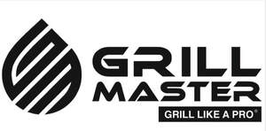

Trade Mark Journal No.2025/041 10 October 2025
UK00004271223 29 September 2025 (11,21,35)

- Class 11
- Kitchen ranges [ovens]; Cooking stoves; Cooking appliances; Hot plates for cooking; Cooking units; Installations for cooking; Cooking grills; Ovens; Smokers [cooking apparatus]; Autoclaves, electric, for cooking; Industrial cooking installations; Electrical cooking apparatus; Electric cooktops; Pans (Electric cooking -); Kebab cooking machines; Multiple cooking plates; Cooking utensils, electric; Industrial cooking ovens; Inset cooking tops; Roasting apparatus; Barbecue apparatus; Multicookers; Cookers incorporating grills; Cooking apparatus and installations; Smoke cooking units; Gas operated apparatus for cooking; Gas cooking apparatus incorporating cooking grills; Smoke generating apparatus for cooking; Gas cookers; Domestic cooking ovens; Spits [parts of cooking apparatus]; Fondues [cooking apparatus]; Commercial cooking ovens; Apparatus for cooking out of doors; Cooking rings; Vapour extractor hoods for kitchen stoves; Solar powered grills for cooking; Cookers having vitreous enamelled surfaces; Combined cooking stoves and gas containers; Gas and electric ranges; Cooking, heating, cooling and preservation equipment, for food and beverages; Air extractor hoods for use with cookers; Barbecues; Barbecue smokers; Electric griddles [cooking appliances]; Broiling pans; Furnace grates; Charcoal grills; Gas grills; Electric broiling pans; Barbecue starters; Lava rocks for use in barbecue grills; Grill lighters; Fire grates (Domestic -); Ceramic briquettes for use in barbecue grills [non-flammable]; Installations for heating foodstuffs; Appliances for smoking foodstuffs; Food dryers; Appliances for cooking foodstuffs; Apparatus for heating foodstuffs; Wood burning stoves.
- Class 21
- Cookery moulds; Cooking pots, non-electric; Autoclaves, non-electric, for cooking; Cooking utensils, non-electric; Shallow pans for cooking; Skewers (cooking utensil); Grills [cooking utensils]; Cooking mesh bags; Non-electric cooking pans; Aluminium cookware; Basting spoons [cooking utensils]; Simmer rings [cooking utensils]; Food steamers, non-electric; Spits [other than parts of cooking apparatus]; Cooking pots and pans [non-electric]; Cookware and tableware, except forks, knives and spoons; Non-electric griddles; Barbecue forks; Barbecue turners; Barbecue tongs; Oven mitts; Grill supports; Camping grills; Grilling planks of wood; Griddles [non-electric cooking utensils]; Cleaning brushes for barbecue grills; Grill scrapers [cleaning articles]; Cooking utensils for use with domestic barbecues; Cutting boards for the kitchen.
- Class 35
- Direct marketing; Digital marketing; Promotional marketing; Advertising and marketing; Product marketing; Marketing; Internet marketing; Influencer marketing; Market campaigns; Development of marketing strategies and concepts; Market research and marketing studies; Distribution of advertising, marketing and promotional material; Advertising and marketing services provided by means of blogging; Advertising, including promotion of products and services of third parties through sponsoring arrangements and licence agreements relating to international sports' events; Franchising services providing marketing assistance; Business advertising services relating to franchising; Business advice relating to franchising; On-line promotion of computer networks and websites; Promotion, advertising and marketing of on-line websites; Retail services relating to food preparation implements; Retail services in relation to food cooking equipment; Retail services in relation to cookware; Wholesale services in relation to food cooking equipment; Wholesale services in relation to cookware.
Alexandru-Razvan Mizdran
Representative: Alpha & Omega